Recursos 1.3
Módulo 1- Unidad 1.3
dgonzalez

Introducción
Una gráfica o una representación gráfica o un gráfico, es un tipo de representación de datos, generalmente cuantitativos, mediante recursos visuales (líneas, vectores, superficies o símbolos), para que se manifieste visualmente la relación matemática o correlación estadística que guardan entre sí.
Wikipedia
Paquetes de R para gráficos
R posee una serie de paquetes construido para la visualización de datos que hacen que tengan una excelente presentación. Empezando por funciones del núcleo base, hasta paquetes que elaboran gráficos interactivos


Elegir el gráfico adecuado es muy importante pues existen diferentes alternativos y se debe escoger el apropiado para representar los datos. El tipo de dato determina el tipo de grafico asi:
| Tipo de variable | Escala | Gráfico |
|---|---|---|
| Cualitativas | ||
| Nominal | torta | |
| Ordinal | barras | |
| Cuantitativas | Intervalo-razón | diagrama de tallos y hojas |
| histograma | ||
| diagrama de cajas | ||
| diagrama de densidad | ||
| diagrama de puntos | ||
| diagrama de lineas | ||
| diagrama de radar | ||
| gráfico likert | ||
| mapa de calor |
Gráficos variables cualitativas con R base
Gráfico de tortas
a=rep("Cultutal", 360145)
b=rep("Pastoral", 61496)
c=rep("Bienestar",49912)
d=rep("Deportivo",11777)
data=c(a,b,c,d)
t=table(data)
lbs=c("Cultural", "Pastoral", "Bienestar", "Deportivo")
pct=round(t/sum(t)*100)
labs=paste(lbs, pct)
labs=paste(labs, "%", sep = " ")
pie(t, labels=labs, main=" Participación eventos Medio Universitario",
col = paleta4)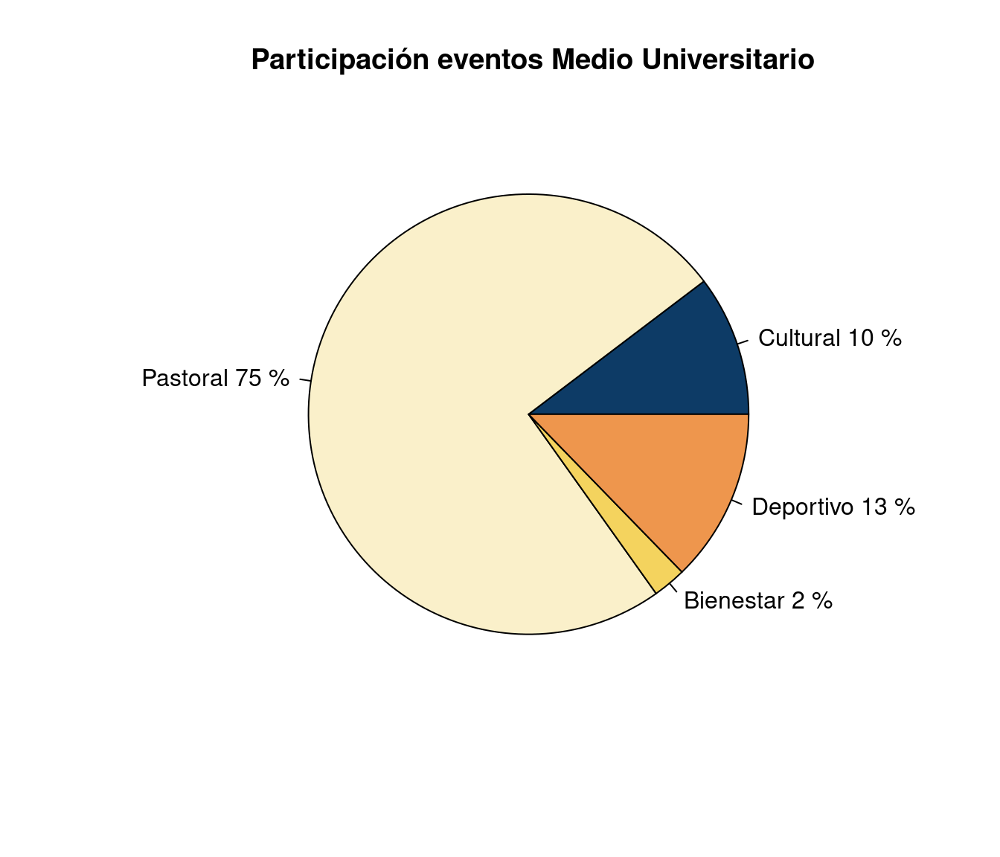
Diagrama de barras
ev=c(4, 8, 12, 43, 32)
names(ev)=c("Muy regular", "Regular", "Bueno", "Muy bueno","Excelente")
barplot(ev, col=c("#ff5b00","#dcf600","#7dbd00","#659cef","#2956b2"), main = "Evaluación proceso de inducción")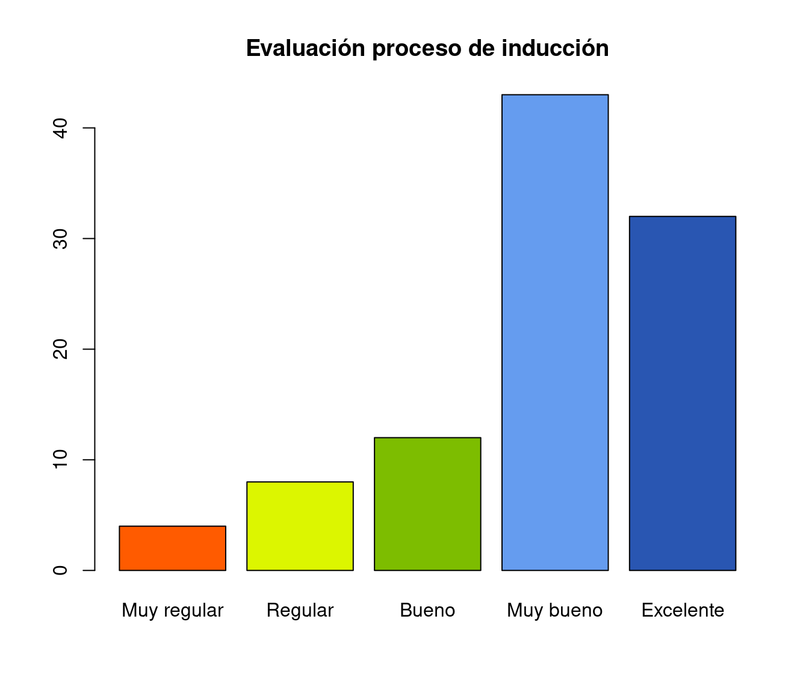
Diagrama de barras dos variables
counts <- table(mtcars$vs, mtcars$gear); rownames(counts)=c("Montor en linea", "Motor en V")
barplot(counts, main="Numero de cambios adelante por Tipo de motor", xlab="Numero de cambios adelante ",col=c("#447270","#f6e271"),
legend = rownames(counts))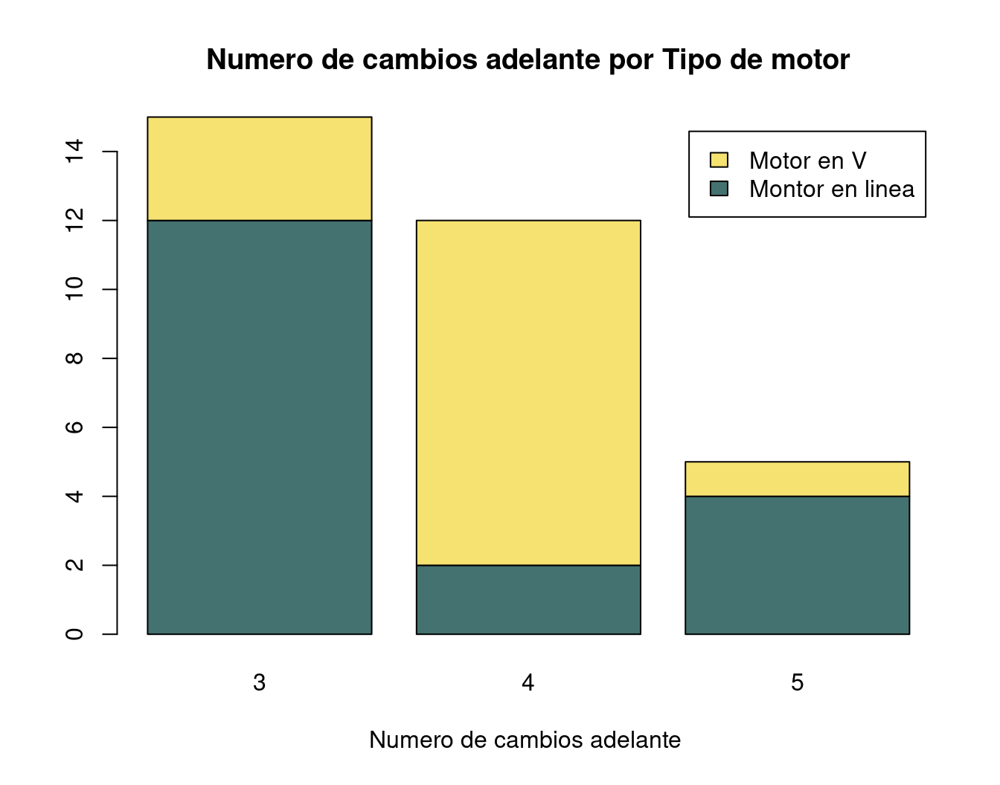
Gráficas variables cuantitativas con R base
Diagrama de árbol
nf=c(4.1, 2.7, 3.1, 3.2, 3.0, 3.2, 2.0, 2.4, 1.6, 3.2, 3.1, 2.6, 2.0, 2.4, 2.8, 3.3, 4.0, 3.4, 3.0, 3.1, 2.7, 2.7, 3.0, 3.8, 3.2, 2.2, 3.5, 3.5, 3.8, 3.5, 3.9, 4.2, 4.3, 3.9, 3.2, 3.5, 3.5, 3.7, 4.1, 3.7, 3.5, 3.6, 3.2, 3.1, 3.4, 3.0, 3.0, 3.0, 2.7, 1.7, 3.6, 2.1, 2.4, 3.0, 3.1, 2.5, 2.5, 3.6, 2.2, 2.4, 3.1, 3.3, 2.7, 3.7, 3.0, 2.7, 3.0, 3.2, 3.1, 2.4, 3.0, 2.7, 2.5, 3.0, 3.0, 3.0, 3.2, 3.1, 3.8, 4.1, 3.7, 3.5, 3.0, 3.7, 3.7, 4.1, 3.7, 3.9, 3.7, 2.0)
stem(nf)
The decimal point is at the |
1 | 67
2 | 00012244444
2 | 555677777778
3 | 0000000000000011111111222222223344
3 | 555555566677777777888999
4 | 0111123Este diagrama ordena los datos de manera que se puede determinar tanto en mínimo (1.6) como el máximo (4.3) , además de visualizar donde están la mayor concentración de ellos.
Histograma
h1=hist(nf, main = "Nota final matemáticas fundamentales", xlab = "nota", ylab="frecuencias absolutas", labels=TRUE, col="#6b9493", ylim = c(0,30))
abline(v=3,col="#f6b915", lwd=4)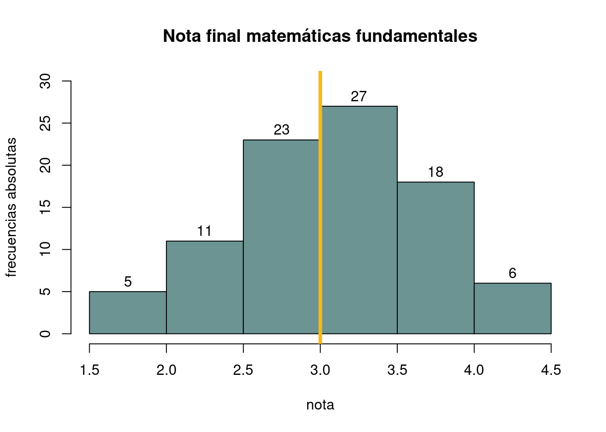
Diagrama de densidad
nf=c(4.1, 2.7, 3.1, 3.2, 3.0, 3.2, 2.0, 2.4, 1.6, 3.2, 3.1, 2.6, 2.0, 2.4, 2.8, 3.3, 4.0, 3.4, 3.0, 3.1, 2.7, 2.7, 3.0, 3.8, 3.2, 2.2, 3.5, 3.5, 3.8, 3.5, 3.9, 4.2, 4.3, 3.9, 3.2, 3.5, 3.5, 3.7, 4.1, 3.7, 3.5, 3.6, 3.2, 3.1, 3.4, 3.0, 3.0, 3.0, 2.7, 1.7, 3.6, 2.1, 2.4, 3.0, 3.1, 2.5, 2.5, 3.6, 2.2, 2.4, 3.1, 3.3, 2.7, 3.7, 3.0, 2.7, 3.0, 3.2, 3.1, 2.4, 3.0, 2.7, 2.5, 3.0, 3.0, 3.0, 3.2, 3.1, 3.8, 4.1, 3.7, 3.5, 3.0, 3.7, 3.7, 4.1, 3.7, 3.9, 3.7, 2.0)
plot(density(nf), main="Distribucion de las notas de matematias fundamentales", col=c0, lwd=4)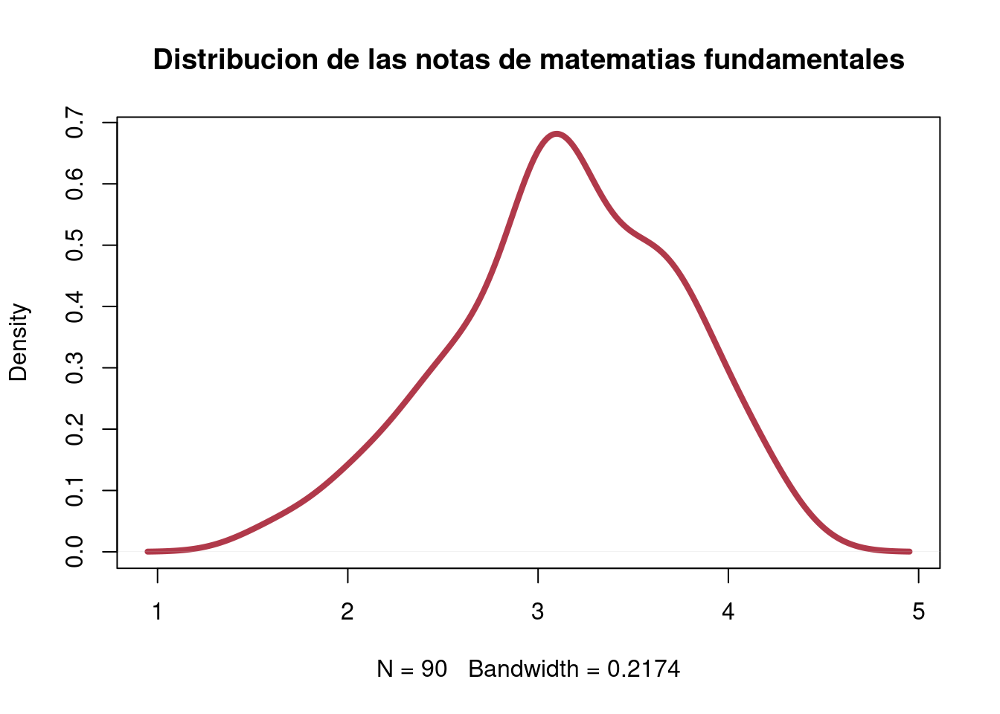
Diagrama de cajas
nf=c(4.1, 2.7, 3.1, 3.2, 3.0, 3.2, 2.0, 2.4, 1.6, 3.2, 3.1, 2.6, 2.0, 2.4, 2.8, 3.3, 4.0, 3.4, 3.0, 3.1, 2.7, 2.7, 3.0, 3.8, 3.2, 2.2, 3.5, 3.5, 3.8, 3.5, 3.9, 4.2, 4.3, 3.9, 3.2, 3.5, 3.5, 3.7, 4.1, 3.7, 3.5, 3.6, 3.2, 3.1, 3.4, 3.0, 3.0, 3.0, 2.7, 1.7, 3.6, 2.1, 2.4, 3.0, 3.1, 2.5, 2.5, 3.6, 2.2, 2.4, 3.1, 3.3, 2.7, 3.7, 3.0, 2.7, 3.0, 3.2, 3.1, 2.4, 3.0, 2.7, 2.5, 3.0, 3.0, 3.0, 3.2, 3.1, 3.8, 4.1, 3.7, 3.5, 3.0, 3.7, 3.7, 4.1, 3.7, 3.9, 3.7, 2.0)
boxplot(nf, main="Nota final matemáticas fundamentales",col="#6abce2", las=1)
abline(h=3, col="red")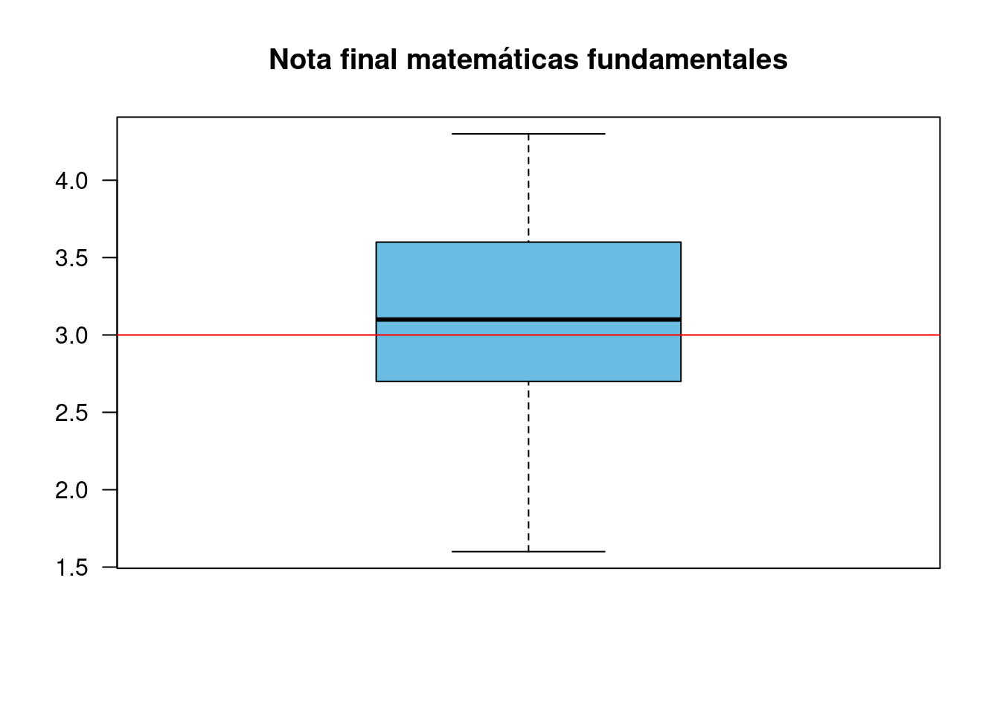
Diagrama de cajas
nf=c(4.1, 2.7, 3.1, 3.2, 3.0, 3.2, 2.0, 2.4, 1.6, 3.2, 3.1, 2.6, 2.0, 2.4, 2.8, 3.3, 4.0, 3.4, 3.0, 3.1, 2.7, 2.7, 3.0, 3.8, 3.2, 2.2, 3.5, 3.5, 3.8, 3.5, 3.9, 4.2, 4.3, 3.9, 3.2, 3.5, 3.5, 3.7, 4.1, 3.7, 3.5, 3.6, 3.2, 3.1, 3.4, 3.0, 3.0, 3.0, 2.7, 1.7, 3.6, 2.1, 2.4, 3.0, 3.1, 2.5, 2.5, 3.6, 2.2, 2.4, 3.1, 3.3, 2.7, 3.7, 3.0, 2.7, 3.0, 3.2, 3.1, 2.4, 3.0, 2.7, 2.5, 3.0, 3.0, 3.0, 3.2, 3.1, 3.8, 4.1, 3.7, 3.5, 3.0, 3.7, 3.7, 4.1, 3.7, 3.9, 3.7, 2.0)
cc=c(20, 10, 20, 20, 20, 20, 20, 20, 20, 30, 20, 20, 20, 10, 30, 20, 20, 30, 20, 30, 30, 20, 10, 30, 20, 20, 30, 30, 10, 20, 10, 20, 20, 20, 10, 20, 10, 20, 20, 30, 30, 30, 10, 30, 20, 20, 20, 20, 20, 20, 10, 20, 30, 30, 10, 10, 10, 20, 10, 20, 10, 30, 20, 10, 20, 30, 10, 30, 30, 30, 20, 30, 30, 30, 30, 30, 30, 20, 10, 30, 10, 20, 20, 10, 20, 20, 20, 20, 10, 20)
labs=c("Ing. de Sistemas","Ing. Industrial","Ing. Mecánica")
boxplot((nf~cc),main="Nota final matemáticas fundamentales por carrera",
col=c("#066d8d","#34b5aa","#ecbe14"), names=labs, xlab = "carrera", ylab = "nota")
abline(h=3, col="#f69312", lwd=4)
abline(h=4, col="#447270", lwd=4)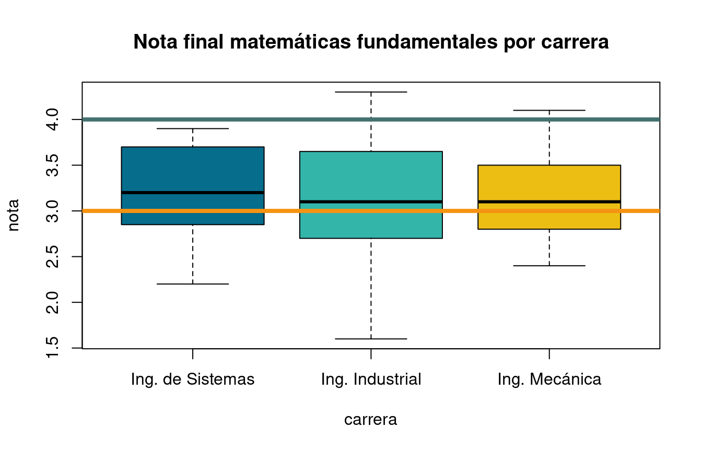
Diagrama de dispersión
ed=round(rnorm(90,18,1),1)
plot(ed,nf, main="Edad vs Nota final matemáticas fundamentales", ylim = c(0,5), xlab = "Edad", ylab = "Nota final",col="#447270",pch=19)
grid()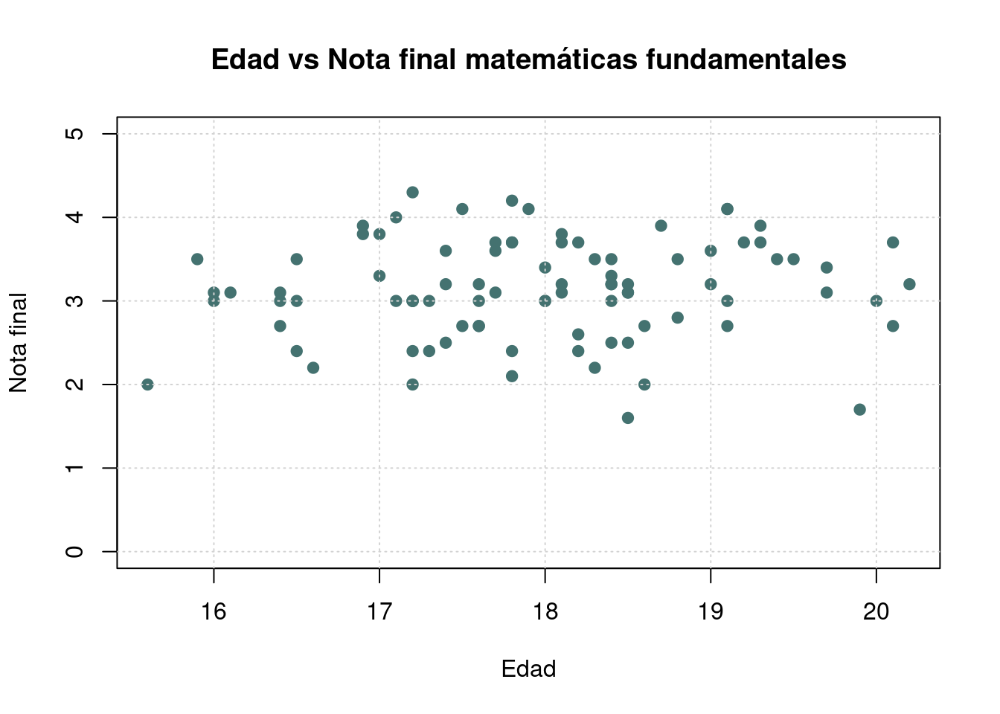
Gráfica de series de tiempo
plot(AirPassengers, main="Numero de pasajeros por mes", col="#203c3b", lwd = 4)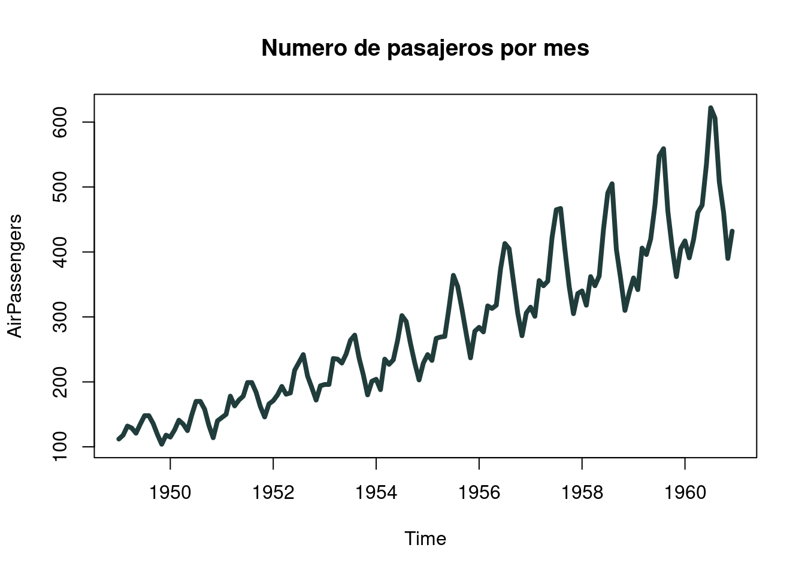
Resumen
x=rnorm(100,100,20)
y=rnorm(100,100,25)
z=rbinom(100,4,0.30)
t=1:100
par(mfrow=c(2, 2))
pie(table(z))
barplot(table(z))
stem(x)
hist(x)
boxplot(x)
plot(x,y)
plot(t,y, type="l")
plot(density(x))
par(mfrow=c(1, 1))Gráficos con ggplot2

Data: capa de los datos
Aesthetics: capa estética (aes), definimos las variables a utilizar en el gráfico
Geometries: capa de geometrías, se define el tipo de gráfica a realizar
Facets: capa de facetas, permite detallar la gráfica por categorías
Statistics: capa de estadística, permite agregar modelos
Coordinates: capa de coordenadas, permite ajustar las escalas de los ejes
Theme: capas de características del gráfico que no dependen de los datos
Visualizacion de datos con ggplot2
library(readr)
library(ggplot2)
clasificacion=read.csv("data/spi_global_rankings_intl.csv")
ggplot(clasificacion, aes(x=off , y=def))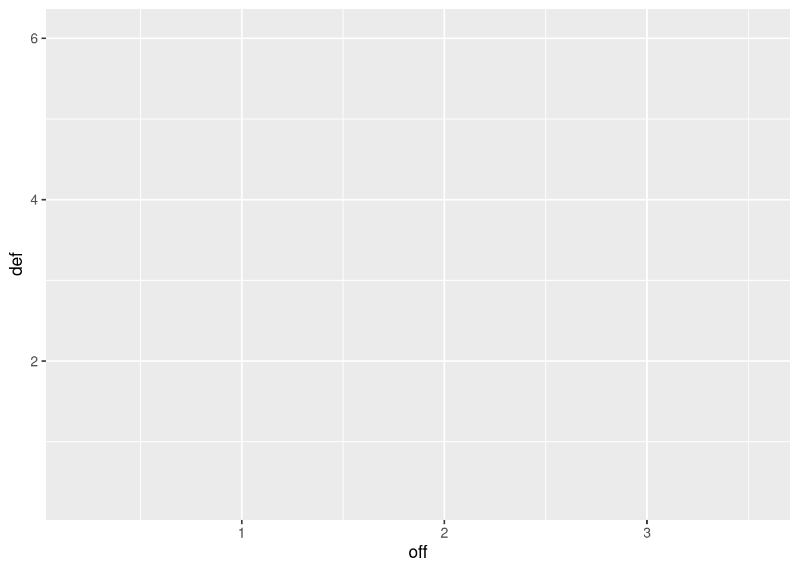
ggplot(clasificacion, aes(x=off , y=def))+
geom_point()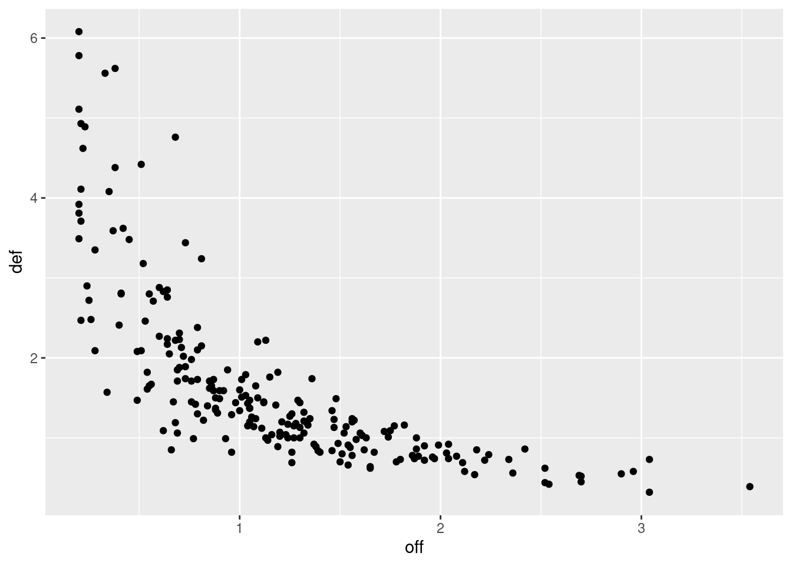
ggplot(clasificacion, aes(x=off , y=def))+
geom_point()
| geo_point() | geom_bar() | geom_col() | stat_count() |
| geom_boxplot() | stat_boxplot() | geom_density() | stat_density() |
| geom_histogram() | geom_violin() |
ggplot(clasificacion, aes(x=off , y=def))+
geom_point()+
facet_wrap(~ confed)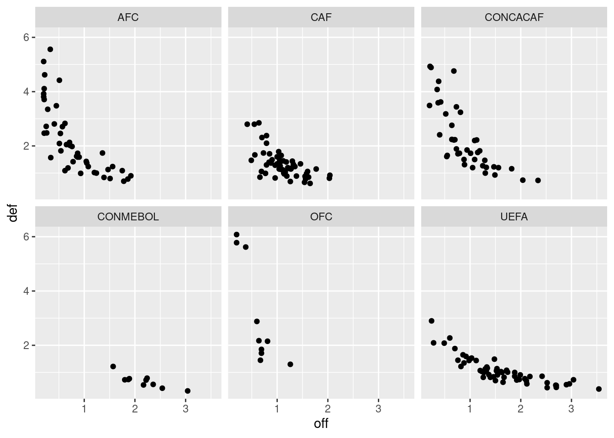
ggplot(clasificacion, aes(x=off , y=def))+ geom_point()+
facet_wrap(~ confed)+ stat_smooth(method = "loess" , formula =y ~ x)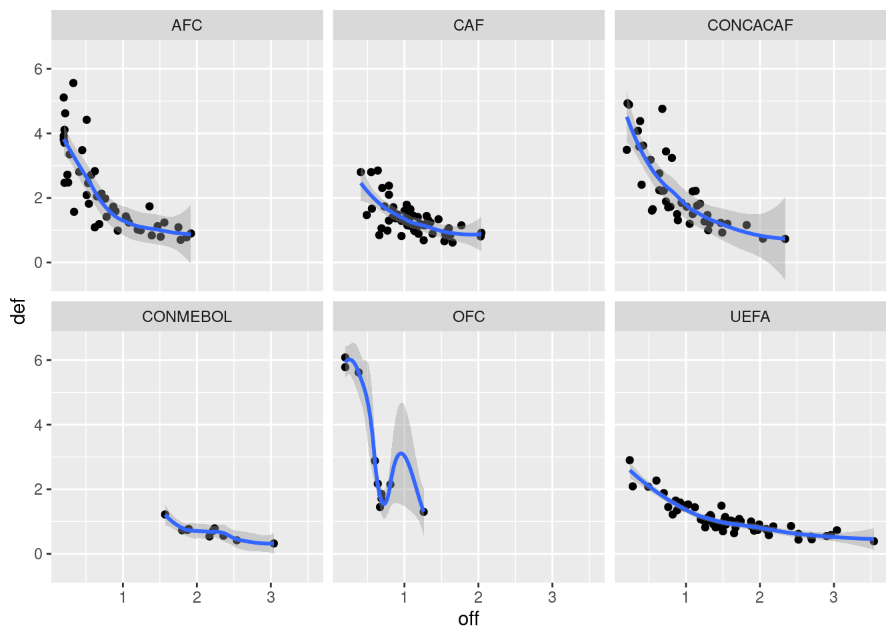
ggplot(clasificacion, aes(x=off , y=def))+ geom_point()+ facet_wrap(~ confed)+ stat_smooth(method = "loess" , formula =y ~ x)+
coord_cartesian(ylim = c(0, 10))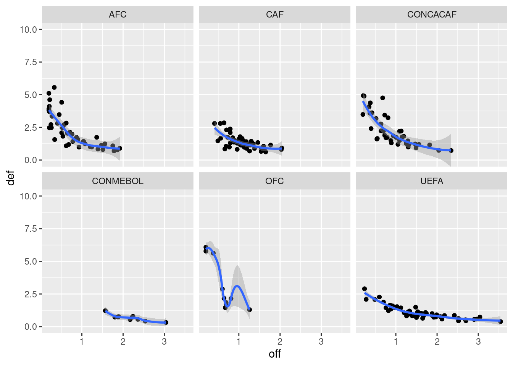
library(ggplot2)
data=data.frame(carrera=c("biologia","biomedica","civil","electronica","mecanica", "sistemas"),frecuencia=c(8, 9,10,2, 3,7))
ggplot(data, aes(x=carrera, y=frecuencia)) +
geom_bar(stat="identity", fill="#203c3d")+
geom_text(aes(label=frecuencia), vjust=2.5, color="white", size=7)+
theme_minimal()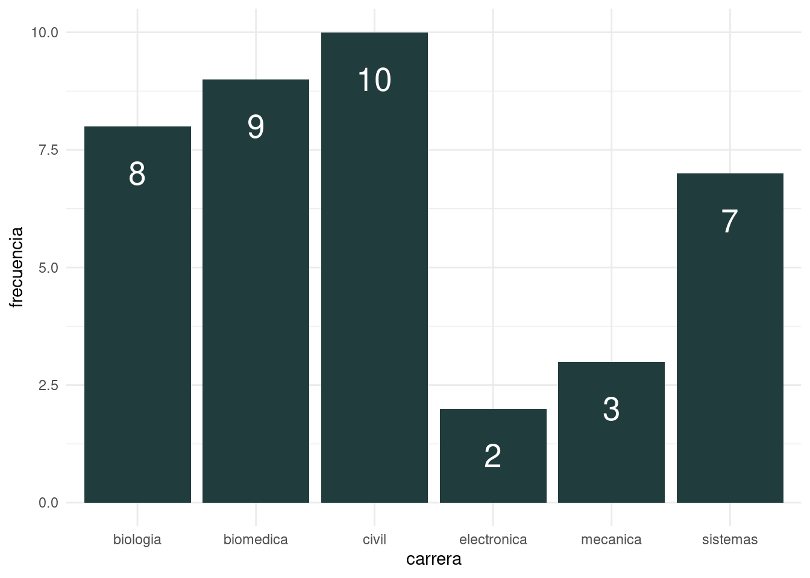
library(ggplot2)
ggplot(mtcars, aes(x=mpg, y=wt, colour = cyl)) +
geom_point()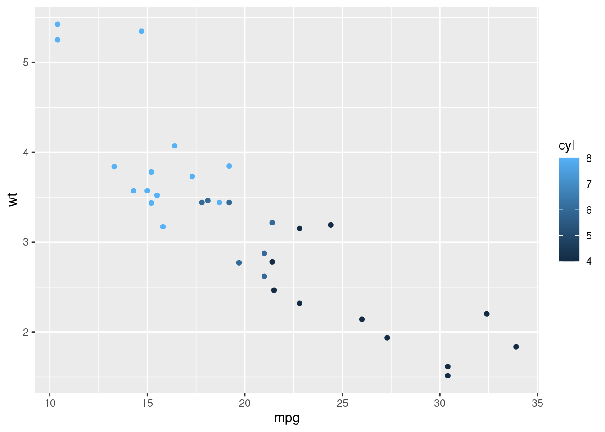
ggplot(iris, aes(Sepal.Length)) +
geom_histogram(bins = 7,fill="#447270", color="#e9ecef", alpha=0.9)+
theme_minimal() +
labs(x = "cm", y = "frecuencia absoluta") +
ggtitle("Longitud del sepalo")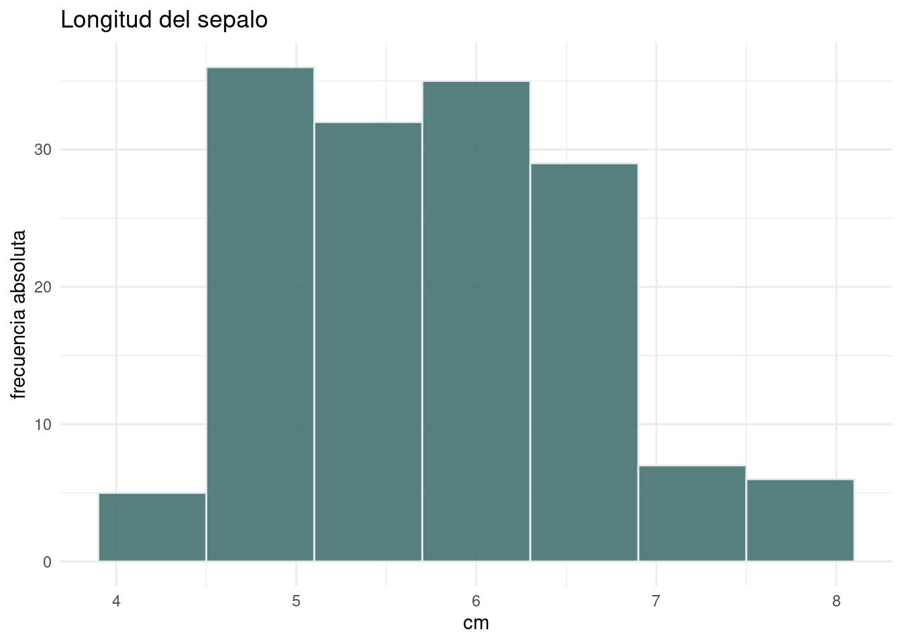
ggplot(iris, aes(x=Sepal.Length, y=Species)) +
geom_boxplot(fill=c("#faf0ca","#f4d35e","#ee964d"), # color de relleno
color="#0d3b66", # color de lineas
alpha=0.5)+
geom_point(color="#f95738",alpha=0.9) # color puntos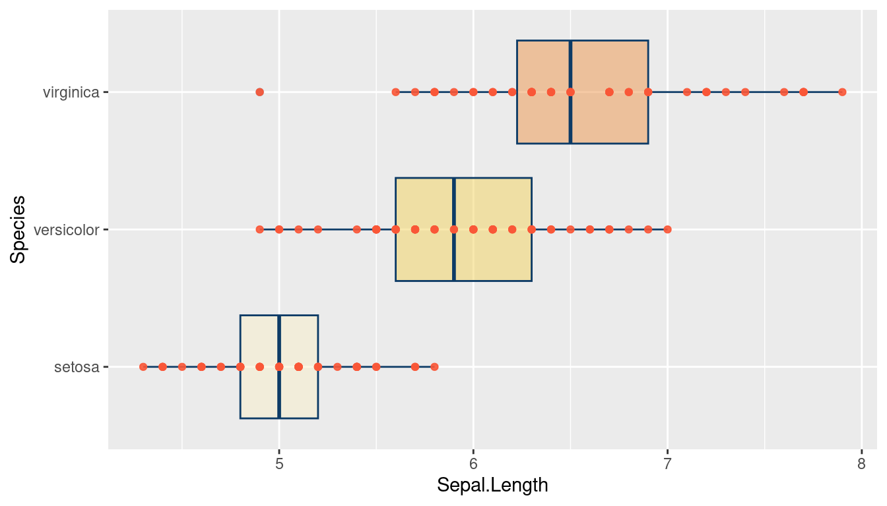
Gráficos con gganimate
library(gapminder) # paquete contiene data Gapminder
library(gganimate) # paquete para animacion grafica
ggplot(gapminder, aes(gdpPercap, lifeExp, size = pop, colour = country)) +
geom_point(alpha = 0.7, show.legend = FALSE) +
scale_colour_manual(values = country_colors) +
scale_size(range = c(2, 12)) +
scale_x_log10() +
facet_wrap(~continent) +
# especificación del la transición animada - gganimate
labs(title = 'AñoYear: {frame_time}', x = 'GDP per capita', y = 'life expectancy') +
transition_time(year) +
ease_aes('linear')Graficos con highcharter
https://jkunst.com/highcharter/
https://rstudio-pubs-static.s3.amazonaws.com/320413_6ab300527e8548b1a3cbd0d4c6200fcc.html
Graficos con Shiny

Una imagen dice mas que mil palabras…
Daniel Enrique González Gómez
Imagen tomada de :https://javerianacali.edu.co/noticias/la-javeriana-bogota-y-cali-1-de-colombia